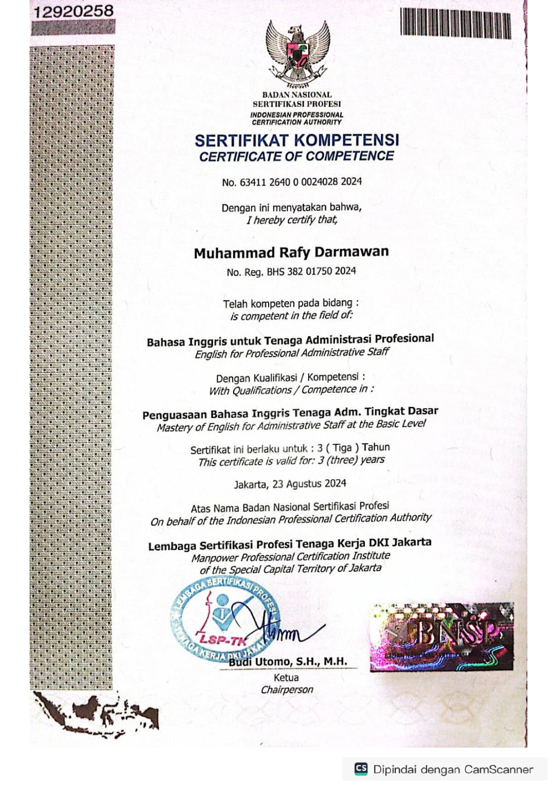
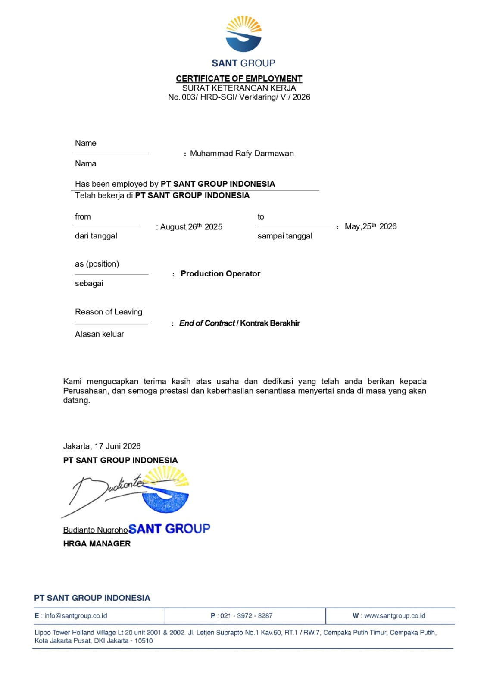

ADMINISTRASI,WAREHOUSE,OPERATOR
Administration & Warehouse Staff dengan pengalaman di bidang logistik, warehouse, dan manufaktur. Terbiasa menggunakan Microsoft Excel untuk pengolahan data, pencatatan dan rekonsiliasi inventory, penyusunan laporan operasional, serta verifikasi data. Memiliki pengalaman dalam pengoperasian mesin filling, coding, dan pressing. Memiliki kemampuan administrasi, dokumentasi, koordinasi lintas tim, dan analisis data dengan tingkat ketelitian tinggi. Cepat belajar, disiplin, adaptif, dan siap berkontribusi dalam bidang Administration, Data Entry, Inventory, maupun Operation Support.
Bertanggung jawab dalam proses kegiatan produksi
Bertanggung jawab dalam proses checking barang, inbound & outbound, pencatatan stok, picking, packing, dan verifikasi data barang
Melakukan proses sorting, scanning, checking, dan handling paket sesuai area dan tujuan pengiriman
Mampu mengoperasikan Microsoft Excel dan Word untuk pengolahan data serta dokumentasi, dan Canva serta CapCut untuk kebutuhan konten visual.
Mampu memanfaatkan teknologi AI sebagai alat bantu untuk meningkatkan produktivitas dan efisiensi kerja sehari-hari.
Mampu mengoperasikan mesin produksi, termasuk proses filling, coding, dan pressing, sesuai standar operasional perusahaan.
Mampu berkomunikasi dengan baik, bekerja sama dalam tim, disiplin, adaptif, dan teliti dalam menyelesaikan setiap pekerjaan.

